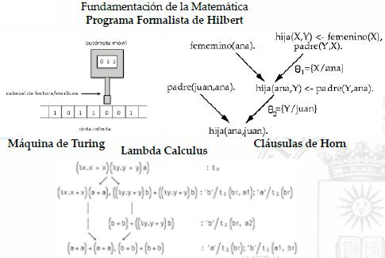
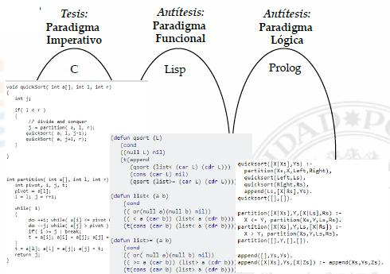
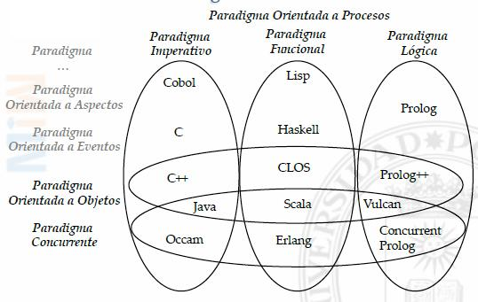
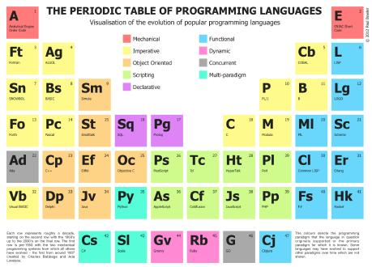
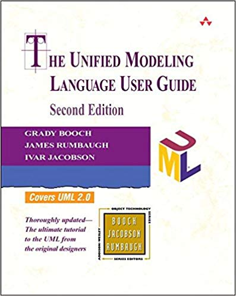
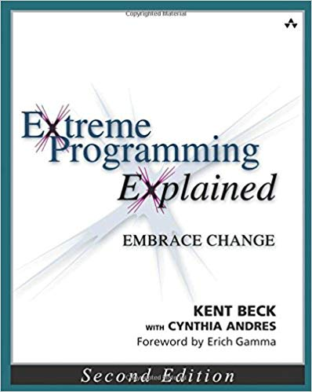
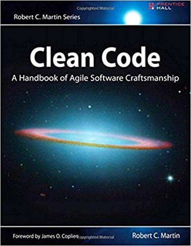
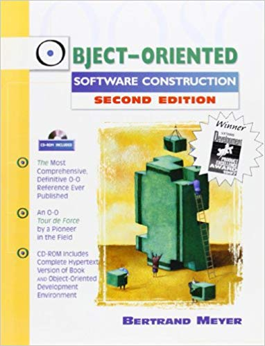

Justificación: ¿Por qué?
Historia del Hardware
-
La humanidad gracias a sus herramientas y, en particular, al conocimiento (ciencias, ingenierías, …), ha construido grandes sistemas artificiales: acueductos, telares con tarjetas perforadas, red eléctrica, red telefónica, … para reutilizar, automatizar y simplificar tareas
-
8000 aec., Los sumerios construyen telares para cubrirse
-
2000 aec., Los sumerios utilizabas el ábaco, primera memoria
-
1642 ec., Blaise Pascal construye la Pascalina, primera calculadora mecánica girando ruedas
-
1801 ec., Jacquard construye el primer telar mecánico y automático con tarjetas perforadas para definir los dibujos
-
1842 ec., Charles Babbage y Ada Lovalace trabajan sobre la Máquina Analítica, con las tarjetas perforadas de los telares … pero no llegó a funcionar aunque Ada ya escribió las primeras líneas de código de la historia.
-
1884 ec., Hollerith desarrolló la Máquina Tabular de tarjetas perforadas para ordenar el registro de propiedad en la Conquista del Oeste
-
1936 ec., Konrad Zuse, ingeniero alemán, diseñó y fabricó la Z1, la que para muchos es la primera computadora programable de la historia
-
| Objeto | Capacidad cualitativa | Capacidad cuantitativa |
|---|---|---|
Ser humano |
Muy buena: reconocimiento de patrones, asociaciones, recursividad, … |
Muy mala: errores por cansancio, desmotivación, … y muy lentos |
Hardware |
Muy mala: ningún computador superó la prueba de Turing |
Muy buena: sin errores y a toda velocidad |
Definición: ¿Qué?
Software es la información que suministra el desarrollador a la computadora para que manipule de forma automática la información que suministra el usuario
-
La información suministrada por el Desarrollador de Software es de diversa naturaleza:
-
Programas en lenguajes de programación (Java, C/C++, …),
-
Scripts para la creación de las tablas de las bases de datos y su población (SQL),
-
Scripts para la generación de páginas dinámicas en aplicaciones Web (JSP, PHP,…),
-
Presentaciones en lenguajes de formato para aplicaciones Web (HTML, CSS, …)
-
Datos de configuración en diversos formatos (texto libre, XML, JSON, …)
-
Multimedia en formatos de imagen, sonido o video para elementos gráficos en la Interfaz de Usuario (*.png, *.waw, *.mpeg, …)
-
…
-
Objetivos: ¿Para qué?
-
Efectividad en la gestión de sistemas de información, requeridos por los usuarios, con
-
Eficacia, sin errores en cálculos, filtrados, secuencias de acciones, …
-
Eficiencia, con escaso consumo de recuros:
-
hardware y energía eléctrica
-
tiempo de los usuarios para aprender y explotar la gestión del sistema de información
-
-
Sistema de Información
Un sistema de información (SI) es un conjunto de elementos orientados al tratamiento y administración de datos e información, organizados y listos para su uso posterior, generados para cubrir una necesidad o un objetivo
Wiki
-
Gestión (CRUD), es el tratamiento de la información, Informática!
-
altas (Create) de información en el sistema
-
bajas (Delete) de información en el sistema
-
modificaciones (Update) de información en el sistema
-
consultas (Read) de información en el sistema
-
Descripción: ¿Cómo?
Actores, Actividades y Artefactos
Paradigmas del Software
…'ciencia normal' significa investigación basada firmemente en una o más realizaciones científicas pasadas, realizaciones que alguna comunidad científica particular reconoce, durante cierto tiempo, como fundamento para su práctica posterior. […] Voy a llamar, de ahora en adelante, a las realizaciones que comparten esas dos características, 'paradigmas', término que se relaciona estrechamente con 'ciencia normal'. Paradigma es un conjunto de prácticas y saberes que definen una disciplina científica durante un período específico
La estructura de las revoluciones científicas
-
Ejemplos:
-
la física de Newton tiene por axiomas que el espacio y el tiempo son dos cosas diferentes y absolutas mientras que la física de Einstein tiene por axioma un espacio-tiempo relativo que se curva …
-
un hippy y un yuppi tienen diferentes objetivos, valores, principios, métodos, … en este mismo mundo
-
-
Paradigmas de la Programación respecto a sus fundamentos matemáticos:

|

|
| Paradigma | Fundamento | Enfoque | Lenguajes |
|---|---|---|---|
Paradigma Imperativo |
Máquina de Turing |
asignación para cambios de estados de los datos variables |
Cobol, Fortran, C, Ada, … |
Paradigma Funcional |
Cálculo Lambda |
Funciones matemáticas sobre valores constantes con el algoritmo de Correspondencia de Patrones para las reglas de sustitución |
Lisp, FP, Scheme, ML, Haskell, … |
Paradigma Lógico |
Cláusulas de Horn |
Hechos y predicados lógicos con algoritmo de Unificacion para las reglas de sustitución |
Prolog, … |
-
Se llama conjuntamente Pardigma Declarativo, unión del Paradigma Funcional y Lógico, enfrentado al Paradigma Imperativo, porque carece de variables con estado y, por tanto, de bucles. Sus soluciones son eminentemente recursivas, declarando la solución de un problema como alguna operación sobre la solución del problema en un grado menos.
-
Paradigmas de la Programación respecto a su organización:
| Paradigma | Enfoque | Lenguajes |
|---|---|---|
Paradigma Orientado a Procesos |
Preponderancia de las operaciones sobre los datos |
C, Pascal, … |
Paradigma Orientado a Datos |
Preponderancia de los datos sobre las operaciones (1ª forma normal, 2ª forma normal, …, Boyce-Codd) |
SQL, … |
Paradigma Orientado a Objetos |
Equilibrio entre datos y operaciones, conformando una clase de objetos reinstanciable |
Smalltalk, C++, Java, CLOS, Python, … |
-
Otros paradigmas de la Programación: Concurrente, Orientado a Eventos, a Aspectos, … Lenguajes Exotéricos: bidimensionales, …!!!

|

|
Sistema Complejo
-
Sistema: Software es un conjunto de clases/módulos relacionándose por herencia, composición, … o interdependientes formando una aplicación. Cada aplicación está delimitada por su entorno tecnologíco-comercial, descrito por su arquitectura del software y requisitos y expresado en su ejecución
-
Sistema complejo: Software de una aplicación media (~100.000 líneas de código) tiene una complejida excede la capacidad intelectual humana
-
Características de Sistemas complejos:
-
Estructura jerárquica gracias a sus jerarquías de herencia, composición, paquetes con clases con atributos y métodos, métodos con sentencias, sentencias con expresiones, …
-
Elementos primitivos relativos gracias a sus tipos primitivos dependiendo del lenguaje (enteros, cadena de caracteres?, fechas?, …) y los definidos por el usuario
-
Separación de asuntos gracias a la encapsulación y modularidad
-
Patrones comunes gracias a algunos métodos de clases que corresponden al paso de mensajes a objetos
-
Formas intermedias estables gracias a las metodologías iterativas
-
-
Calidad del Software
-
Distintas características no funcionales del software
-
Fiabilidad, cumpla una determinada función bajo ciertas condiciones durante un tiempo determinado
-
Usabilidad, sencillo de usar porque facilita la lectura de los textos, descarga rápidamente la información y presenta funciones y menús sencillos, por lo que el usuario encuentra satisfechas sus consultas y cómodo su uso
-
Accesibilidad, pueda ser accedido y usado por el mayor número posible de personas, indiferentemente de las limitaciones propias del individuo o de las derivadas del contexto de uso
-
-
Seguridad, proteger los datos que tiene, maneja y dispone para preservar la confidencialidad, la integridad y la disponibilidad
-
Confidencialidad, acceso a la información mediante autorización y control para prevenir la divulgación no autorizada de la información
-
Integridad, para modificar la información mediante autorización
-
Disponibilidad, degradación en cuanto a accesos para prevenir interrupciones no autorizadas
-
-
Interoperabilidad, habilidad de dos o más sistemas o componentes para intercambiar información y utilizar la información intercambiada
-
Portabilidad, habilidad de reutilizar en vez de crear un nuevo software cuando se pasa de una plataforma a otra
-
Escalabilidad, habilidad para reaccionar y adaptarse sin perder calidad cuando aumentan el tamaña del sistema de información
-
Extensibilidad, habilidad de tener la posibilidad de se extendido con nuevas funcionalidades
-
… todas dependen de:
-
Mantenibilidad
-
Mantenibilidad, habilidad de conservar su funcionamiento normal o para restituirlo una vez se ha presentado un evento de falla o un nuevo requisito
-
Mantenibilidad Correctiva, para la eliminación de errores de cualquier otra cualidad
-
Mantenibilidad Perfectiva, para la modificación de su funcionalidad con cualquier otra cualidad
-
Mantenibilidad Adaptativa, para la modificación de su infraestructura para cualquier otra cualidad
-
Diagrama con relación a los actores
Mantenible |
No mantenible |
Fluido |
Viscoso |
Flexible |
Rígido |
Fuerte |
Frágil |
Reusable |
Inmóvil |
Viscosidad vs Fluidez
-
Viscosidad viene en dos formas: viscosidad del diseño, y la viscosidad del entorno.
-
La viscosidad del diseño se produce cuando nos enfrentamos a un cambio, los ingenieros suelen encontrar más de una manera de hacer el cambio. Algunas de las formas conservan el diseño, otros no lo hacen, es decir, son atajos. Cuando preservar el diseño es más difícil que emplear los atajos, a continuación, la viscosidad del diseño es alta. Es fácil de hacer las cosas mal, pero difícil de hacer lo correcto.
-
La viscosidad del entorno se produce cuando el entorno de desarrollo es lento e ineficiente. Por ejemplo, si los tiempos de compilación son muy largos, los ingenieros tendrán la tentación de hacer cambios que no obligan a grandes re-compilaciones, a pesar de que esos cambios no son óptimos desde el punto de vista del diseño. Si el sistema de control de código fuente requiere horas para comprobar tan sólo unos pocos archivos, consecuentemente, los ingenieros tendrán la tentación de hacer cambios que requieren el menor número de subidas (commits) como sea posible, independientemente de si el diseño se conserva.
-
Rigidez vs Flexibilidad
-
Rigidez es la tendencia del software que es difícil de cambiar, incluso en formas simples. Cada cambio provoca una cascada de cambios posteriores en los módulos dependientes. Lo que comienza como un simple cambio de dos días a un módulo se convierte en un maratón de varias semanas de cambios en el módulo después de otros módulos según los ingenieros persiguen el hilo del cambio a través de la aplicación.
-
Cuando el software se comporta de esta manera, los gerentes temen que permitirá a los ingenieros no solucionar problemas críticos. Esta resistencia se deriva del hecho de que ellos no saben, con confiabilidad, cuando terminarán. Si los gerentes insisten, los ingenieros se perderán en este tipo de problemas, que pueden desaparecer durante largos periodos de tiempo.
-
Cuando los miedos del gerente son tan agudos que se niegan a permitir cambios en el software, la rigidez oficial se instala. Por lo tanto, lo que comienza como una deficiencia de diseño, termina siendo una política de gestión adversa.
-
Fragilidad vs Fortaleza
-
En estrecha relación con la rigidez está la fragilidad.
-
Fragilidad es la tendencia del software para estropearse en muchos lugares cada vez que se cambia. A menudo, el error se produce en las zonas que no tienen ninguna relación conceptual con el área que se ha cambiado..
-
Según empeora la fragilidad, la probabilidad de error aumenta con el tiempo, asintóticamente acercándose 1. Este tipo de software es imposible de mantener. Cada solución hace que sea peor, la introducción de más problemas que soluciones.
-
Tales errores llenan las sensaciones de los gerentes de malos presagios. Cada vez que autorizan una solución, temen que el software va a estropearse de alguna manera inesperada. Este tipo de software hace que los gerentes y los clientes sospechen que los desarrolladores han perdido el control de su software. La desconfianza reina, y la credibilidad se pierde.
-
Inmovilidad vs Reusabilidad
-
La inmovilidad es la imposibilidad de volver a utilizar el software de otros proyectos o de partes del mismo proyecto.
-
A menudo sucede que un ingeniero descubrirá que necesita un módulo que es similar a uno que escribió otro ingeniero. Sin embargo, también sucede a menudo que el módulo en cuestión tiene demasiado equipaje del que depende.
-
Después de mucho trabajo, los ingenieros descubren que el trabajo y el riesgo requerido para separar las partes deseables del software de las partes no deseadas son demasiado grandes como para tolerarlo. Y así, el software es simplemente reescrito en lugar de reutilizado.
-
Evolución del Software
Ley del Decremento de la calidad: La calidad de los sistemas software comenzará a disminuir a menos que dichos sistemas se adapten a los cambios de su entorno de funcionamiento.
— Lehman y Belady
|
Ley del Crecimiento continuado: La funcionalidad ofrecida por los sistemas tiene que crecer continuamente para mantener la satisfacción de los usuarios.
— Lehman y Belady
|
Ley del Cambio Continuo: Un programa que se usa en un ámbito del mundo real, necesariamente debe cambiar o convertirse cada vez en menos útil y menos satisfactorio para el usuario.
— Lehman y Belady
|
Ley de la Complejidad Creciente: Debido a que los programas cambian por evolución, su estructura se convierte en más compleja a menos que se hagan esfuerzos activos para evitar este fenómeno
— Lehman y Belady
|
Ley de la Autorregulación: Los atributos de los sistemas, tales como tamaño, tiempo entre entregas y la cantidad de errores documentados son aproximadamente invariantes para cada entrega del sistema.
— Lehman y Belady
|
Ley de la Estabilidad organizacional: Durante el tiempo de vida de un programa, su velocidad de desarrollo es aproximadamente constante e independiente de los recursos dedicados al desarrollo del sistema.
— Lehman y Belady
|
Ley de la Conservación de la familiaridad: A medida que un sistema evoluciona todo lo que está asociado con ello, como los desarrolladores, personal de ventas, y usuarios por ejemplo, deben mantener un conocimiento total de su contenido y su comportamiento para lograr una evolución satisfactoria. Un crecimiento exagerado disminuye esta capacidad.
— Lehman y Belady
|
Ley de la Retroalimentación del sistema: Los procesos de evolución incorporan sistemas de retroalimentación multiagente y multibucle y estos deben ser tratados como sistemas de retroalimentación para lograr una mejora significativa del producto.
— Lehman y Belady
|
-
El software no se muere, se convierte en un zombi!!!
La observación general es que el principal enemigo de la fiabilidad, y tal vez de la calidad del software en general, es la complejidad
— Meyer
|
Cuanto más complejo sea un sistema, más abierto está al colapso total. Gran parte de la complejidad que se tiene que dominar es la complejidad arbitraria
— Booch
|
Sencillez
El descubrimiento de un orden no es tarea fácil. . . . sin embargo, una vez que el orden ha sido descubierto no hay dificultad alguna en reconocerlo
En igualdad de condiciones, la explicación más sencilla suele ser la correcta
| Antónimos | Antonyms | Libro | Autor |
|---|---|---|---|
Mantenlo sencillo, estúpido! |
Keep it simple, stupid! |
En un portaviones?!? |
Kelly Jhonson |
Mantenlo pequeño y sencillo! |
Keep it short and simple |
||
Mantenlo pequeño y simple! |
Keep it small and simple |
||
Comprender el algoritmo |
Understand the Algorithm |
Smell Code (Clean Code) |
Robert Martin |
| Antónimos | Antonyms | Libro | Autor |
|---|---|---|---|
Código Espagueti |
Spaghetti Code |
Antipatrón de Desarrollo |
William H. Brown et al |
Generalidad Espculativa |
Speculative Generality |
Smell Code -(Refactoring) |
Martin Fowler |
Intenciones obscuras |
Obscured Intent |
Smell Code (Clean Code) |
Robert Martin |
Cualquier tonto inteligente puede hacer cosas más grandes y más complejas … se necesita un toque de genialidad y mucho coraje para moverse en la dirección opuesta"
— Einstein
A. |
“Sin embargo, no es suficiente para dejar las comillas alrededor de la palabra ‘funciona’. Usted debe saber que la solución es correcta. A menudo, la mejor manera de obtener este conocimiento y comprensión es refactorizar la función en algo que es tan limpio y expresivo que es obvio cómo funciona".
— Martin
|
-
Justificación
-
La mayoría de sistemas funcionan mejor si se mantienen simples que si se hacen complejos; por tanto, la simplicidad debe ser un objetivo clave del diseño, y cualquier complejidad innecesaria debe evitarse
-
Lo Sencillo es Equilibrado (Proporcional), Geométrico (Simétrico), … con una estructura que reusa unos pocos patrones iterativos, recurrentes y recursivos!
-
-
Violaciones
-
Si tienes clases abstractas que no están haciendo mucho, colapsa la jerarquía
-
Innecesaria delegación puede ser eliminadacon la clase “en línea”
-
Métodos que no usan parámetros deberían ser eliminados
-
Nombres de métodos con extraños nombres abstractos deben ser renombrados para “traerlos a la tierra”
-
Complejos algoritmos generalistas para situaciones muy concretas
-
Complejos algritmos muy eficientes cuando no hay necesidad
-
Bibliografía
| Obra, Autor y Edición | Portada | Obra, Autor y Edición | Portada |
|---|---|---|---|
|

|
|

|
|

|
|

|
|

|
|

|
|

|
|

|
|

|
|

|